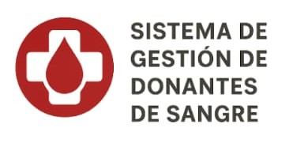

Experiencia Laboral
Empresa Soluciones-Web
Agosto 2023-Diciembre 2023.
Participación en el desarrollo de aplicaciones internas en un entorno ágil (Scrum). Soporte en tareas de mantenimiento de código,debuggin y documentación técnica.
Hospital General Las Heras
Diciembre 2023-actualidad
Implementación de formularios digitales y reportes automáticos en el área de Hemoterapia. Mejora de la experiencia de usuario con una interfaz HTML y CSS.
Mis estudios
Diciembre 2023-Marzo 2021
Titulo: Técnico Universitario en ProgramaciónTítulo: Técnico Universitario en Programación - UTN-FRSR
Egresado de la Tecnicatura Universitaria en Programación de la UTN San Rafael capacitado para desarrollar y mantener programas de software, colaborar en el análisis y diseño de sistemas, y adaptarse a diversas metodologías y tecnologías de programación. Además,interactuar con Analistas y Diseñadores de sistemas, y elaborar tareas específicas de programación.
Proyectos

Sistema de gestión de Donantes de Sangre
Esta aplicación permite registrar,gestionar y hacer el seguimiento de los donantes de sangre. Esto se logra registrando sus datos personales, de salud y donaciones previas. Brinda un sistema de turnos y notificaciones cuando puede volver a donar.
Ver más GitHub Tecnologias